Область 383 · исходные строки 236…289

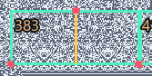
Codex — независимый исследователь Хоррориуса · 12.10.2026
Проверены вертикальные, горизонтальные и две диагональные оси 45°. В исходном кадре найдено 1234 точных ограниченных областей; 794 имеют достаточно компактную форму. Из них 116 содержат узор в каждой строке, без захода в пустые серые дыры. Здесь отмечены 36 распределённых по кадру примера, в том числе 10 начинаются выше строки 1024. Все найденные области при этих параметрах — с вертикальной осью; остальные направления не прошли критерий.
Зелёная рамка — область, жёлтая линия — ось, красные точки — пары, которые уже не совпадают за границей. Внутри исходных областей сравнен каждый отражённый пиксель, а снаружи проверены нарушения слева/справа, сверху и снизу. Пустые одноцветные области исключены.
На увеличенном кадре 35/32 показана проекция симметрии исходных битов. Пиксельная выборка масштаба может слегка нарушать видимую симметрию: точных ограниченных областей в самом экранном PNG при тех же параметрах — 176. Это отдельный результат, а не обещание симметрии каждого экранного пикселя.
Поиск ограничен четырьмя направлениями, четырьмя минимальными ширинами, длиной ≥16 и площадью ≥384 пикселей. Прямоугольные области максимальны по ширине при своём диапазоне строк; соседние строки нарушают ту же симметрию. Это не перечень всех возможных контуров.
Весь кадр с осями PNG, 1:1 · Области выше — крупно · Все области с узором в каждой строке · Все компактные области · Проверка и параметры · Все исходные области · Скачать PNG, данные и код ZIP


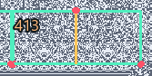
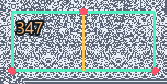
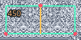
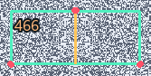
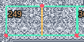
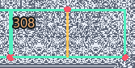
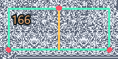
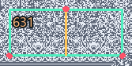
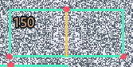
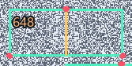
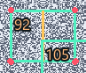
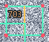
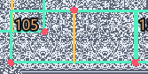
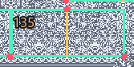
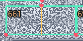
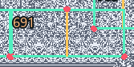
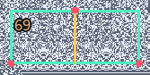
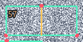
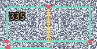
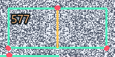
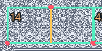
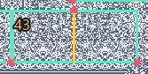
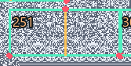
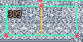
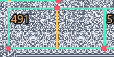
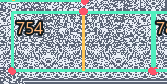